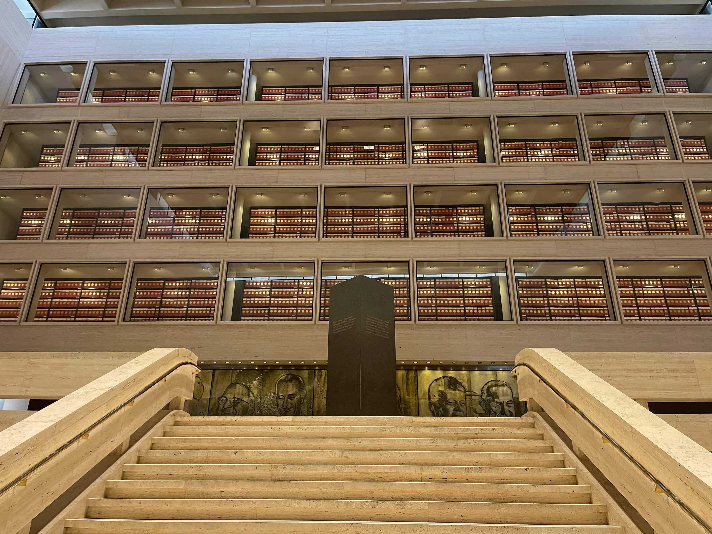
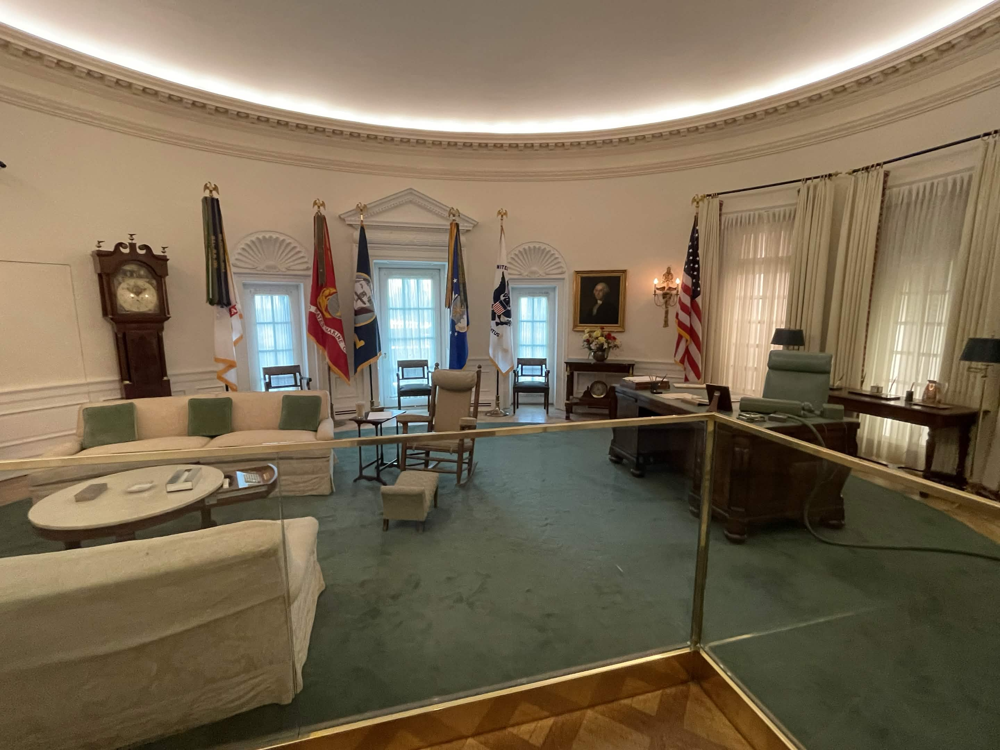
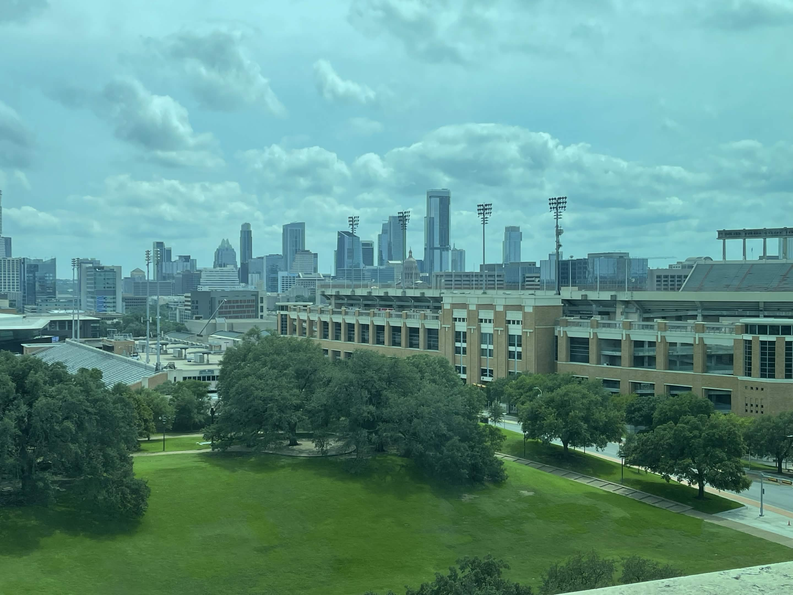
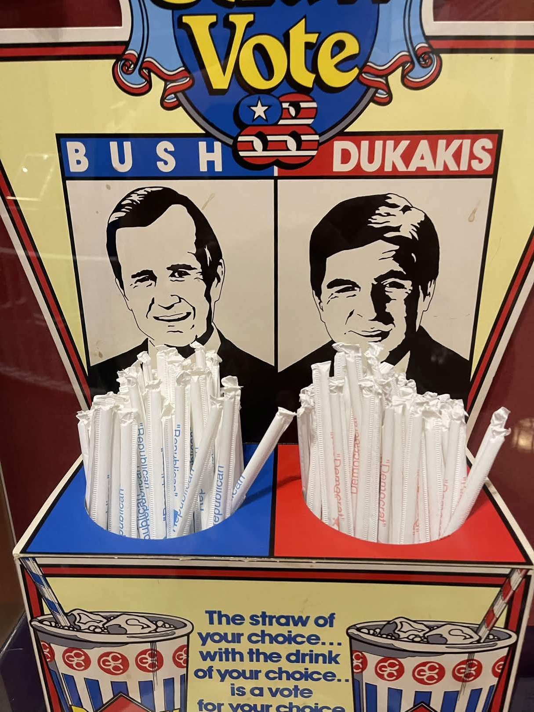

I am a collector of historical fun facts, especially those pertaining to United States history and the presidents. Below are some pictures I took of historical sites and exhibits
during my travels, along with some of my own commentary. On my bucket list is to visit all the presidential libraries -- every president from Hoover to Obama has a presidential
library operated by the National Archives and Records Administration. These libraries house historical documents and double as a museum dedicated to the president's life and legacy.
The Lyndon B. Johnson Presidential Library (Austin, Texas)
The Archives

A Replica of LBJ's Oval Office
A portrait of George Washington can be seen on the far side -- many presidents include a portrait of Washington in their Oval Offices. Not seen in this
photo are two more portraits that LBJ specifically hung on his wall: Franklin D. Roosevelt and Andrew Jackson. The inclusion of FDR is rather obvious --
LBJ was a disciple of his both during and after FDR's presidency. One can argue that LBJ's Great Society programs were modeled after the New Deal.
The inclusion of Jackson, however, perplexed me, especially since Jackson has always been a controversial figure since his presidency. I had a conversation
about this with a man named Stephen, who works as a docent at the library; his thought is that LBJ saw himself and Jackson as "outsiders" to the American elite, and
therefore representative of common folk. Indeed, Jackson is the first president born in a log cabin, while LBJ hailed from a small, poor town in the Texas Hill Country.

A View from a Replica of Lady Bird Johnson's Office
This view from a replica of the former first lady's office includes UT's football stadium, the skyline of downtown Austin, and the Texas capitol building.

The George H.W. Bush Presidential Library (College Station, Texas)
A Relic of Old Political Party Color Coding
Today, Americans recognize that red is the color of the Republican Party and blue is the color of the Democratic Party. However, this convention is rather new to
American politics, only beginning in the election of 2000. Before this, all manner of colors were used to represent the two parties. This box of straws
was placed in movie theaters during the 1988 election. Moviegoers could select a blue straw to show support for Bush (the Republican candidate) or a red straw to show support for
Michael Dukakis (the Democrat candidate).

A Section of the Berlin Wall
After the fall of the Berlin Wall in 1989, many sections of the wall were given to museums and exhibits around the world. George H.W. Bush, being president when the wall fell,
fittingly has a section in his presidential library. On the left is the side facing West Berlin, while on the right is the side of the same segment facing East Berlin. This
east-facing side is barren of graffiti, since the eastern side of the wall was heavily guarded.